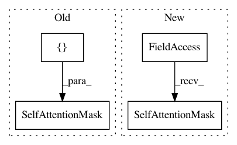

5fc4c351699c9007a727eaaef99413962cf0818f,official/nlp/modeling/networks/mobile_bert_encoder.py,MobileBERTEncoder,__init__,#MobileBERTEncoder#Any#Any#Any#Any#Any#Any#Any#Any#Any#Any#Any#Any#Any#Any#Any#Any#Any#Any#,26
Before Change
type_ids = tf.keras.layers.Input(
shape=(None,), dtype=tf.int32, name="input_type_ids")
self.inputs = [input_ids, input_mask, type_ids]
attention_mask = layers.SelfAttentionMask()([input_ids, input_mask])
// build the computation graph
all_layer_outputs = []
all_attention_scores = []
After Change
type_ids = tf.keras.layers.Input(
shape=(None,), dtype=tf.int32, name="input_type_ids")
self.inputs = [input_ids, input_mask, type_ids]
attention_mask = keras_nlp.layers.SelfAttentionMask()(input_ids, input_mask)
// build the computation graph
all_layer_outputs = []
all_attention_scores = []
In pattern: SUPERPATTERN
Frequency: 3
Non-data size: 4
Instances
Project Name: tensorflow/models
Commit Name: 5fc4c351699c9007a727eaaef99413962cf0818f
Time: 2020-12-09
Author: hongkuny@google.com
File Name: official/nlp/modeling/networks/mobile_bert_encoder.py
Class Name: MobileBERTEncoder
Method Name: __init__
Project Name: tensorflow/models
Commit Name: 5fc4c351699c9007a727eaaef99413962cf0818f
Time: 2020-12-09
Author: hongkuny@google.com
File Name: official/nlp/modeling/networks/albert_encoder.py
Class Name: AlbertEncoder
Method Name: __init__
Project Name: tensorflow/models
Commit Name: 5fc4c351699c9007a727eaaef99413962cf0818f
Time: 2020-12-09
Author: hongkuny@google.com
File Name: official/nlp/modeling/networks/packed_sequence_embedding.py
Class Name: PackedSequenceEmbedding
Method Name: __init__